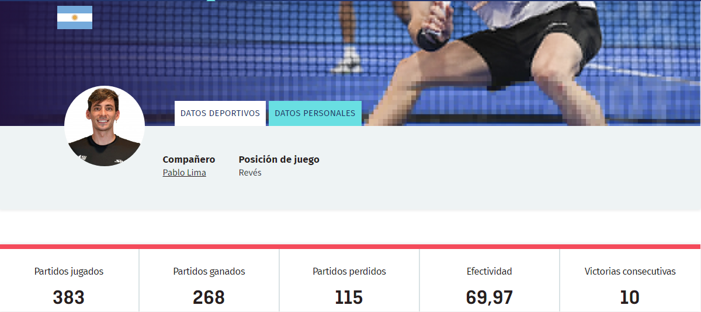

<<<<<<< HEAD
Franco Stupaczuk
Ocupa el número 8 en el ranking World Padel Tour.
- Nacimiento: 25 de marzo de 1996 (edad 26 años), Provincia del Chaco, Argentina
- Estatura: 1,78m
- Apodo(s): Stupa

=======
Franco Stupaczuk
Ocupa el número 8 en el ranking World Padel Tour.
- Nacimiento: 25 de marzo de 1996 (edad 26 años), Provincia del Chaco, Argentina
- Estatura: 1,78m
- Apodo(s): Stupa
>>>>>>> b743b9d (Agregar Video de ultimas noticias desde youtube al codigo de AleGalan y Chingotto, ademas de agregaron divisiones y encabezados al index y estos dos)